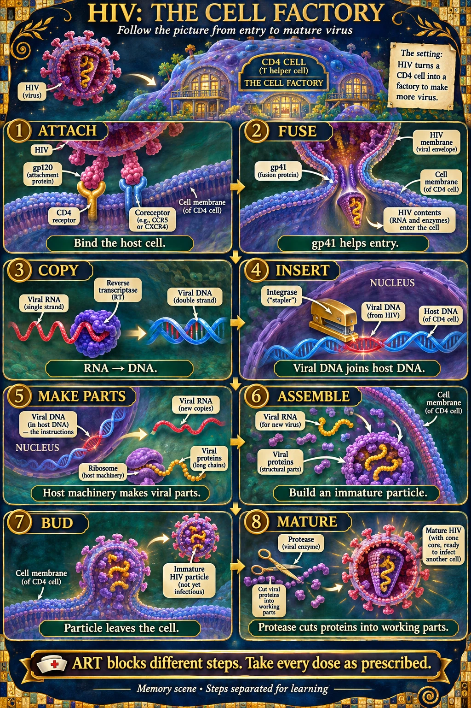

ABSN STUDY HUB · VISUAL STUDY CARD
HIV attachment
HIV attachment

Memory cues: grip = attachment; fusion anchor = gp41; copier = reverse transcriptase; stapler = integrase; scissors = protease. The cell-factory picture separates assembly, budding and maturation for learning.
The picture above is original Study Hub artwork. Existing Simple Nursing material remains in the linked course/module; no exact additional handout match was identified for this companion card in the current preview catalog.
Clinical sources: NIH HIVinfo: HIV life cycle ↗
Course labels and notes from the original graphic, arranged into readable sections. The illustration is schematic.
Original course labels
- HIV: its gp120 spike grabs CD4 on the CD4 T cell
- The second receptor it needs on that cell: CCR5